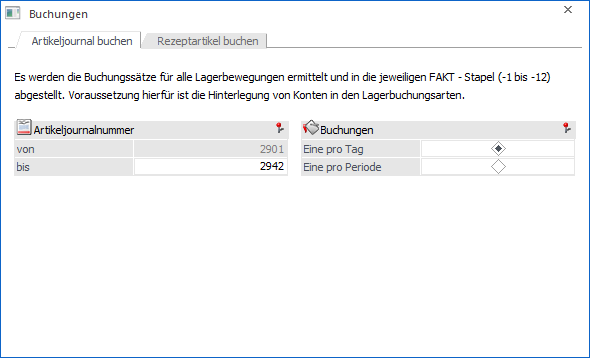
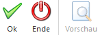
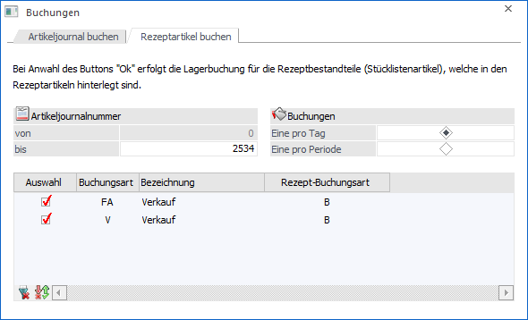
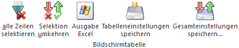
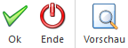

Im Programm "Buchungen", welches über den Menüpunkt…
1 WinLine FAKT
1 Abschluss
1 Artikeljournal buchen
… aufgerufen wird, können (abhängig vom gewählten Register) folgende Tätigkeiten durchgeführt werden:
ü Register "Artikeljournal
buchen"
Mit Hilfe dieses Registers können manuell erfasste
Lagerbuchungszeilen (z.B. über "WinLine FAKT - Erfassen - Lagerverwaltung -
Lagerbuchhaltung") in die Finanzbuchhaltung übergeben werden.
ü Register "Rezeptartikel
buchen"
Mit Hilfe dieses Registers können die Bestandteile eines
Rezeptartikels im Artikeljournal gebucht werden.
Register "Artikeljournal buchen"

In dem Register "Artikeljournal buchen" können die Daten aller manuellen Lagerbewegungen ermittelt und in die WinLine FIBU übertragen werden
Hinweis
Um diese Funktion nutzen zu können müssen in den Lagerbuchungsarten die Wareneinsatz- bzw. Erlöskonten hinterlegt worden sein. Diese Konten werden bei einer anschließend manuellen erfassten Lagerbewegung in die Artikeljournalzeile geschrieben und dienen somit als Buchungsgrundlage.
Ø Artikeljournalnummer
An dieser Stelle kann definiert werden, bis zu welcher Artikeljournalzeile die Daten für die WinLine FIBU aufbereitet werden sollen.
Ø Buchungen
Hier kann gewählt werden, ob die Buchungen pro Periode bzw. pro Tag erzeugt bzw. übergeben werden.
Buttons

Ø Ok
Durch Anwahl des Buttons "Ok" bzw. der Taste F5 werden die Buchungssätze ermittelt und (abhängig vom Artikeljournaldatum) an die Buchungsstapel "-1" bis "-12" übergeben. Zusätzlich wird in den Spooler ein Protokoll mit "Konto Soll / Haben", "Betrag", "Datum", "Buchungsart" und "Stapelnummer" ausgegeben.
Hinweis
Wenn Buchungen aus der Lagerstandsübernahme vorhanden sind (und bei der entsprechenden Lagerbuchungsart die Einsatzkontierung hinterlegt ist), so werden die Buchungen in den Buchungsstapel des Datums der Eröffnungsbuchung gestellt.
Ø Ende
Durch Drücken des Buttons "Ende" bzw. der Taste ESC wird das Fenster geschlossen und keine Buchung erzeugt.
Ø Vorschau
Der Buttons "Vorschau" steht nur im Register "Rezeptartikel buchen" zur Verfügung.
Register "Rezeptartikel buchen"

Mit Hilfe des Registers "Rezeptartikel buchen" können die Bestandteile (Stücklistenartikel) eines gebuchten Rezeptartikels im Artikeljournal verbucht werden.
Hinweis 1
Voraussetzung, um dieses Register "Rezeptartikel buchen" zu aktivieren, ist die Kennzeichnung mindestens einer Lagerbuchungsart als Lagerbuchungsart für "Rezeptartikel".
Hinweis 2
Zum Verbuchen bereit stehen die Bestandteile (Stücklistenartikel) der Rezeptartikel, sobald ein Lieferschein bzw. Faktura mit dem Rezeptartikel gedruckt und in der dazugehörigen Belegart eine als "Rezeptartikel" gekennzeichnete Lagerbuchungsart zugeordnet wurde.
Ø Artikeljournalnummer
An dieser Stelle erfolgt die Anzeige der Artikeljournalnummer, bis zu der bereits gebucht wurde. Als "bis"-Wert wird die letzte Journalnummer angezeigt. Diese kann pro Buchungslauf manuell verändert werden.
Ø Buchungen
Hier kann gewählt werden, ob die Buchungen "pro Periode" oder "pro Tag" durchzuführt werden soll.
Ø Tabelle "Lagerbuchungsarten"
In der Tabelle werden alle Lagerbuchungsarten angezeigt, welche die Option "Rezeptartikel buchen" hinterlegt haben. Hier gibt es pro Zeile eine Checkbox "Auswahl", mit welcher die zu buchenden Lagerbuchungsarten aktiviert werden können. Im Standard sind immer alle Buchungsarten aktiviert
Tabellenbuttons

Ø alle Zeilen selektieren
Durch Anwahl des Buttons werden alle Lagerbuchungsarten selektiert.
Ø Selektion umkehren
Mit Hilfe dieses Buttons wird die Selektion der Spalte "Auswahl umgekehrt.
Ø Ausgabe Excel
Durch Anwahl des Buttons "Ausgabe Excel" wird der Inhalt der Tabelle nach Microsoft Excel übergeben.
Ø Tabelleneinstellungen speichern
Die Spalten einer Tabelle können grundsätzlich an beliebige Positionen verschoben, bzw. in der Breite entsprechend angepasst werden. Durch Anwahl des Buttons "Tabelleneinstellungen speichern" werden die Einstellungen benutzerspezifisch gespeichert und bei dem nächsten Aufruf des Programmpunktes wieder vorgeschlagen.
Ø Gesamteinstellungen speichern
Im Gegensatz zu "Tabelleneinstellungen speichern" können mit "Gesamteinstellungen speichern" mehrere Tabellenaufbauten gespeichert und nach Wunsch geladen werden. Zusätzlich werden Sonderfunktionen der Tabelle (z.B. "Spalte gruppieren") ebenfalls bei der Speicherung bedacht.
Buttons

Ø Ok
Bei Anwahl des Buttons "Ok" bzw. der Taste F5 erfolgt die Lagerbuchung gemäß der zuvor getroffenen Selektion. Dabei wird folgende Prüfung durchgeführt:
ü Bei allen Artikeln des Typs "Rezeptartikel", die innerhalb der angegebenen Journalnummern mit einer der zuvor ausgewählten Lagerbuchungsart gebucht wurden, wird die Stückliste aus dem Stamm analysiert.
ü Die im Stücklistenstamm hinterlegten Artikel werden auf die entsprechende Menge umgerechnet und im Lager verbucht.
Im Artikeljournal werden Buchungszeilen, die durch diese Rezeptartikel-Buchung generiert wurden, mit einem entsprechenden Buchungs-Text vermerkt.
Ø Ende
Durch Drücken des Buttons "Ende" bzw. der Taste ESC wird das Fenster geschlossen und keine Buchung erzeugt.
Ø Vorschau
Mit Hilfe des Buttons "Vorschau" wird ein Protokoll auf dem Bildschirm ausgegeben. Es zeigt die Rezeptartikel und listet alle Artikel auf, zu denen eine Rezeptartikelbuchung vorgenommen werden kann (es wird keine Buchung erzeugt).